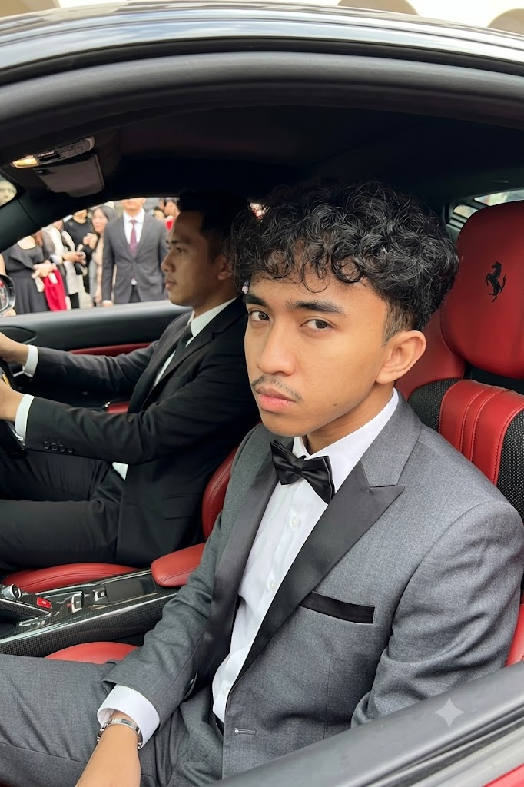
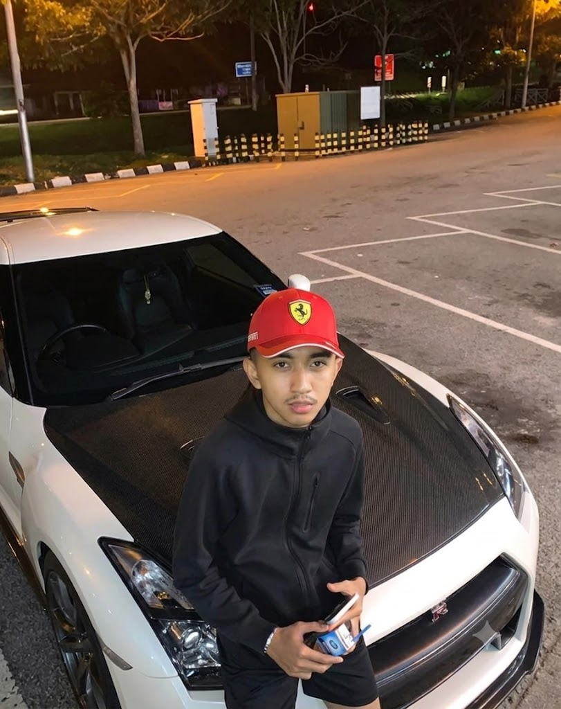
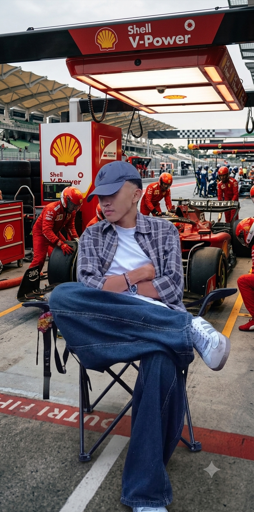
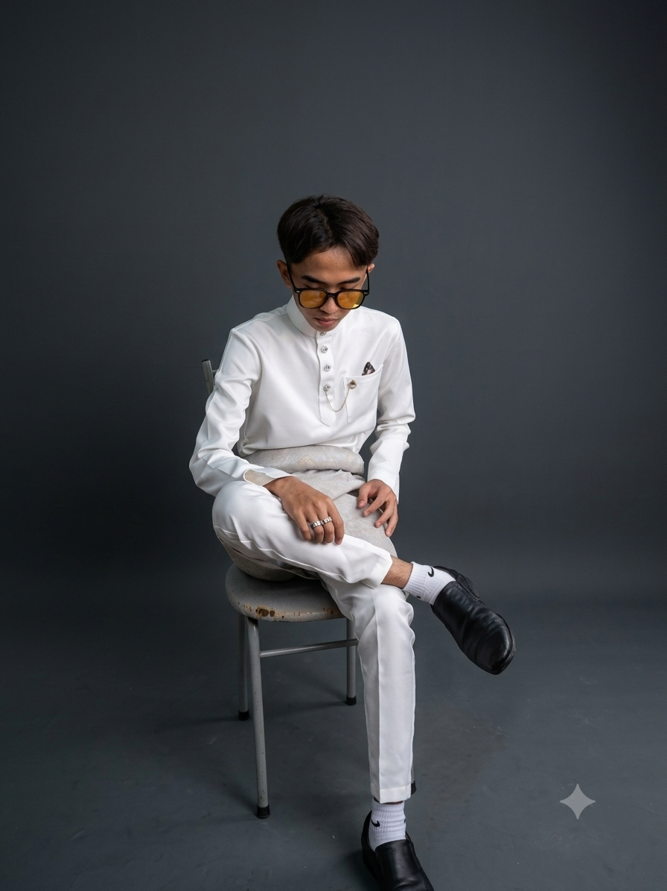

Holla! My name is Muhamad Zarith Zafwan Bin Shuhaimi. Welcome to my personal hub, where you can learn more about my journey and interests. Here is more you can discover about me!




I am 21 years old and I am currently studying at UiTM Cawangan Rembau, pursuing a diploma in information management. I have a strong interest in technology and am excited to learn more about coding and web development. For this Website, I aim to showcase my skills and passion for web development.
I am born at HOSPITAL UNIVERSITI KEBANGSAAN MALAYSIA (HUKM) on 13th October 2005 and I am currently moved to Nilai, Negeri Sembilan, living in a modern community called Bandar Enstek.
// Academic Milestones & Progression
Where my early education foundation was poured, sparking the initial curiosity for learning and growth.
Completed my high school chapter (SPM) in 2023. This is where I sharpened my analytical mind, built a strong foundation in disciplined study, and unlocked a deep fascination with technical structures and data systems.
Currently pushing through the final, intense laps of my Diploma in Information Management. Navigating complex database paradigms, organizing high-level digital infrastructures, and mastering the frameworks of technology.
I have a few distinct hobbies that keep me busy. One of my primary passions is motorcycle modification—I love building, upgrading, and custom tuning motorcycles to peak visual and mechanical performance. When I need to downshift and unwind, I head out for fishing trips to learn about different fish species and natural marine habitats.
My ultimate dream is to launch out as a successful businessman in the technology industry. I aim to build innovative tech products and platforms that leave a positive, real-world impact. By combining hands-on technical skills with strategic vision, I look forward to actively advancing Malaysia's tech landscape. Other than that, I also inspired by opening business in cafe section.
I'm the 2nd child from 4 silings and the older brother of two younger siblings. I has been raised in a supportive environment that values education and hard work. My inspiration comes from my family and the people around me who have supported me throughout my journey. They have encouraged me to pursue my dreams and never give up on what I believe in.
I have gained valuable experience through my part-time work, which has helped me develop crucial professional skills, discipline, and time management while balancing my studies:
My Social Media
Facebook
Zafwan Shuhaimi →
Instagram
@zyithh →
TikTok
@usernotherenyeh →